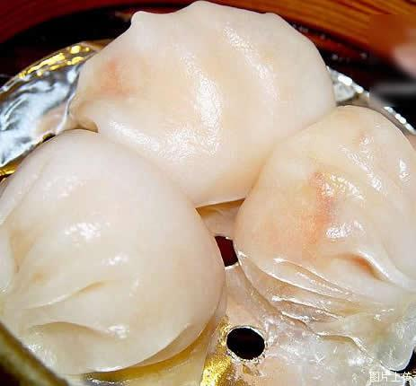
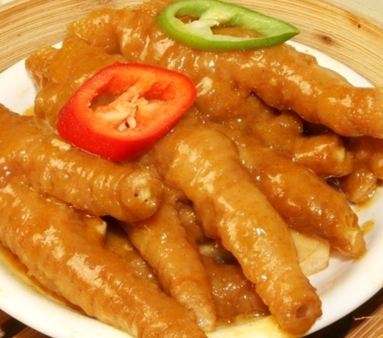
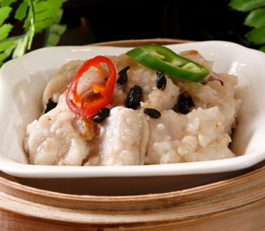
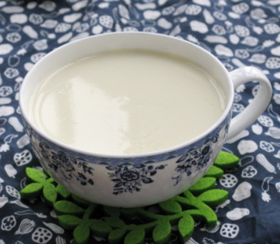

Cantonese cuisine is one of the eigh great traditions of Chinese cuisine. For eating,Guangzhou is the place to be. The food of Guangzhou is distinctive,you can eat different delicious food here. Cantonese enjoy the moment when they have tea and dim sum in the morning, together with their families and friends. Most of the foods are delicate, but the taste is absolutely marvelous.
For cantonese,good start for a day might mean an enjoyable morning tea. It is a kind of dumpling which contain with fresh shrimps.

It is the most famous dim sum in the Cantonese morning tea. Nearly everyone will order it.

Steamed ribs tastes very tender. It is one of my most favourite dishes. gz dimsun is not just to fill your stomach. It’s a kind of leisure. Dimsun is a social activity, a leisure activity, an opportunity for several people to get together, and have a nice talk.

The coagulant milk with ginger juice is a famous traditional dessert with fresh milk and ginger as main raw material .it is wonderful that milk solidified when it is mixed to ginger juice .you can make it for yourself at home. It’s very easy.

Back to top